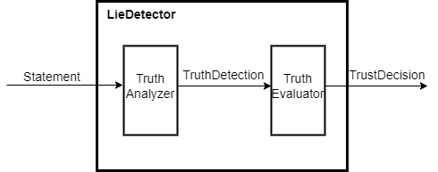

Finite State Machine
Finite State Machine（FSM，有限状态机）是在有限个状态之间按照一定规律转换状态（并给出输出）的时序电路。 FSM 是数逻重点部分，如果印象模糊请认真复习数逻对应部分，在此不赘述。
本节实验要求使用 Verilog 等 HDL 设计“测谎仪”的一部分。
问题叙述
“测谎仪”接收一段叙述，给出结果“可信”或“不可信”。在设计“测谎仪”功能时，我们可以将它拆分为两个模块，真实分析器(TruthAnalyzer)和信任评估器(TruthEvaluator)。真实分析器获得一段输入，内部进行分析后，给出“可以信任”或“可能说谎”的判断；信任评估器根据应答者的回答诚信度历史以及本次真实分析器的判断，给出最终的判断。其模式图如下：

本次实验要求完成信任评估器的模块设计。模块名与端口名如下：
我们规定其输入 truth_detection 为 1 时表示真实分析器给出的结果是“可以信任”，否则是“可能说谎”；其输出 trust_decision 在信任评估器认为“可信”时为 1，否则为 0。
为了简化设计，我们规定信任评估器的行为如下所述：
- 内部状态有 4 个
HIGHLY_TRUSTWORTHY, TRUSTWORTHY, SUSPICIOUS, UNTRUSTWORTHY，分别表示“非常可信”、“可信”、“可疑”、“不可信”- 初始内部状态为“非常可信”
HIGHLY_TRUSTWORTHY
- 初始内部状态为“非常可信”
- 状态转移每次时钟上升沿，根据输入
truth_detection的值- 为
1时，状态向“更加信任”的方向转移HIGHLY_TRUSTWORTHY则保持状态为HIGHLY_TRUSTWORTHYTRUSTWORTHY则转移为HIGHLY_TRUSTWORTHYSUSPICIOUS则转移为TRUSTWORTHYUNTRUSTWORTHY则转移为SUSPICIOUS
- 为
0时，状态向“更加怀疑”的方向转移，与上述类似但方向相反，在此不再赘述
- 为
- 输出判断仅与当前状态有关
- 状态为
HIGHLY_TRUSTWORTHY, TRUSTWORTHY时输出trust_decision为1 - 状态为
SUSPICIOUS, UNTRUSTWORTHY时输出trust_decision为0
- 状态为
思考题
请根据以上要求，完成信任评估器的状态转移图，你可以纸笔书写并拍照，或使用 drawio 等工具绘图。
模块实现
报告中需要给出你写出的完整代码。
一个可以参考的有限状态机书写方式，三段式描述：将输出信号与状态跳转分开描述，状态跳转用组合逻辑来控制。
根据你绘制的状态图，使用三段式描述完成“测谎仪”信任评估器的模块书写。
你的代码主体将主要分为以下几个部分：
- 第一段主要用来控制时序，保证下一个时钟上升沿完成状态转移，同时需要注意重置时将状态变为起始状态（可以选择自己添加重置信号，或者直接将状态寄存器的初值设为起始状态）；
- 第二段使用组合逻辑，主要是根据现态和输入决定次态，为此你可能需要使用
case关键词； - 第三段决定输出，根据你的状态转移图，将所有输出为1的状态取或即可，类似于
assign out = (Q1 == curr_state) || (Q2 == curr_state);。
仿真测试
报告中需要给出 testbench 代码，测试波形与解释（波形截图需要保证缩放与变量数制合适）。
请自行书写本模块的仿真激励文件 TruthEvaluator_tb.v。